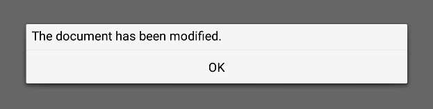

MessageDialog QML Type
A native message dialog. More...
| Import Statement: | import Qt.labs.platform 1.1 |
| Since: | Qt 5.8 |
| Inherits: |
Properties
- buttons : flags
- detailedText : string
- informativeText : string
- text : string
Signals
- abortClicked()
- applyClicked()
- cancelClicked()
- clicked(button)
- closeClicked()
- discardClicked()
- helpClicked()
- ignoreClicked()
- noClicked()
- noToAllClicked()
- okClicked()
- openClicked()
- resetClicked()
- restoreDefaultsClicked()
- retryClicked()
- saveAllClicked()
- saveClicked()
- yesClicked()
- yesToAllClicked()
Detailed Description
The MessageDialog type provides a QML API for native platform message dialogs.

A message dialog is used to inform the user, or ask the user a question. A message dialog displays a primary text to alert the user to a situation, an informative text to further explain the alert or to ask the user a question, and an optional detailed text to provide even more data if the user requests it. A message box can also display a configurable set of buttons for accepting a user response.
To show a message dialog, construct an instance of MessageDialog, set the desired properties, and call open().
MessageDialog {
buttons: MessageDialog.Ok
text: "The document has been modified."
}
The user must click the OK button to dismiss the message dialog. A modal message dialog blocks the rest of the GUI until the message is dismissed.
A more elaborate approach than just alerting the user to an event is to also ask the user what to do about it. Store the question in the informative text property, and specify the buttons property to the set of buttons you want as the set of user responses. The buttons are specified by combining values using the bitwise OR operator. The display order for the buttons is platform dependent.
MessageDialog {
text: "The document has been modified."
informativeText: "Do you want to save your changes?"
buttons: MessageDialog.Ok | MessageDialog.Cancel
onAccepted: document.save()
}

The clicked() signal passes the information of which button was clicked.
A native platform message dialog is currently available on the following platforms:
- iOS
- Android
- WinRT
The Qt Labs Platform module uses Qt Widgets as a fallback on platforms that do not have a native implementation available. Therefore, applications that use types from the Qt Labs Platform module should link to QtWidgets and use QApplication instead of QGuiApplication.
To link against the QtWidgets library, add the following to your qmake project file:
QT += widgets
Create an instance of QApplication in main():
#include <QApplication> #include <QQmlApplicationEngine> int main(int argc, char *argv[]) { QApplication::setAttribute(Qt::AA_EnableHighDpiScaling); QApplication app(argc, argv); QQmlApplicationEngine engine; engine.load(QUrl(QStringLiteral("qrc:/main.qml"))); return app.exec(); }
Note: Types in Qt.labs modules are not guaranteed to remain compatible in future versions.
Property Documentation
This property holds a combination of buttons that are used by the message dialog. The default value is MessageDialog.NoButton.
Possible flags:
| Constant | Description |
|---|---|
MessageDialog.Ok | An "OK" button defined with the AcceptRole. |
MessageDialog.Open | An "Open" button defined with the AcceptRole. |
MessageDialog.Save | A "Save" button defined with the AcceptRole. |
MessageDialog.Cancel | A "Cancel" button defined with the RejectRole. |
MessageDialog.Close | A "Close" button defined with the RejectRole. |
MessageDialog.Discard | A "Discard" or "Don't Save" button, depending on the platform, defined with the DestructiveRole. |
MessageDialog.Apply | An "Apply" button defined with the ApplyRole. |
MessageDialog.Reset | A "Reset" button defined with the ResetRole. |
MessageDialog.RestoreDefaults | A "Restore Defaults" button defined with the ResetRole. |
MessageDialog.Help | A "Help" button defined with the HelpRole. |
MessageDialog.SaveAll | A "Save All" button defined with the AcceptRole. |
MessageDialog.Yes | A "Yes" button defined with the YesRole. |
MessageDialog.YesToAll | A "Yes to All" button defined with the YesRole. |
MessageDialog.No | A "No" button defined with the NoRole. |
MessageDialog.NoToAll | A "No to All" button defined with the NoRole. |
MessageDialog.Abort | An "Abort" button defined with the RejectRole. |
MessageDialog.Retry | A "Retry" button defined with the AcceptRole. |
MessageDialog.Ignore | An "Ignore" button defined with the AcceptRole. |
MessageDialog.NoButton | The dialog has no buttons. |
See also clicked().
detailedText : string |
This property holds the text to be displayed in the details area.
See also text and informativeText.
informativeText : string |
This property holds the informative text that provides a fuller description for the message.
Informative text can be used to expand upon the text to give more information to the user.
See also text and detailedText.
text : string |
This property holds the text to be displayed on the message dialog.
See also informativeText and detailedText.
Signal Documentation
This signal is emitted when Abort is clicked.
Note: The corresponding handler is onAbortClicked.
This signal is emitted when Apply is clicked.
Note: The corresponding handler is onApplyClicked.
This signal is emitted when Cancel is clicked.
Note: The corresponding handler is onCancelClicked.
This signal is emitted when a dialog button is clicked.
Note: The corresponding handler is onClicked.
See also buttons.
This signal is emitted when Close is clicked.
Note: The corresponding handler is onCloseClicked.
This signal is emitted when Discard is clicked.
Note: The corresponding handler is onDiscardClicked.
This signal is emitted when Help is clicked.
Note: The corresponding handler is onHelpClicked.
This signal is emitted when Ignore is clicked.
Note: The corresponding handler is onIgnoreClicked.
This signal is emitted when No is clicked.
Note: The corresponding handler is onNoClicked.
This signal is emitted when No To All is clicked.
Note: The corresponding handler is onNoToAllClicked.
This signal is emitted when Ok is clicked.
Note: The corresponding handler is onOkClicked.
This signal is emitted when Open is clicked.
Note: The corresponding handler is onOpenClicked.
This signal is emitted when Reset is clicked.
Note: The corresponding handler is onResetClicked.
This signal is emitted when Restore Defaults is clicked.
Note: The corresponding handler is onRestoreDefaultsClicked.
This signal is emitted when Retry is clicked.
Note: The corresponding handler is onRetryClicked.
This signal is emitted when Save All is clicked.
Note: The corresponding handler is onSaveAllClicked.
This signal is emitted when Save is clicked.
Note: The corresponding handler is onSaveClicked.
This signal is emitted when Yes is clicked.
Note: The corresponding handler is onYesClicked.
This signal is emitted when Yes To All is clicked.
Note: The corresponding handler is onYesToAllClicked.